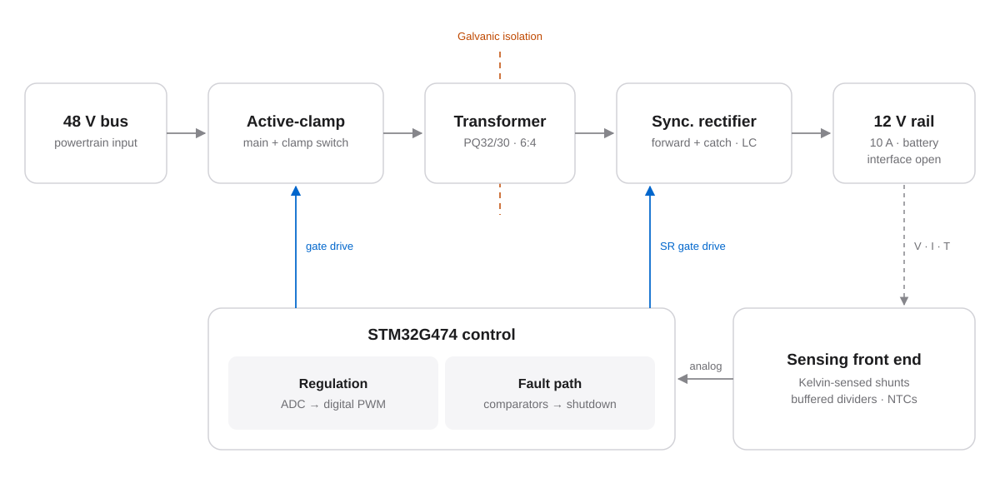
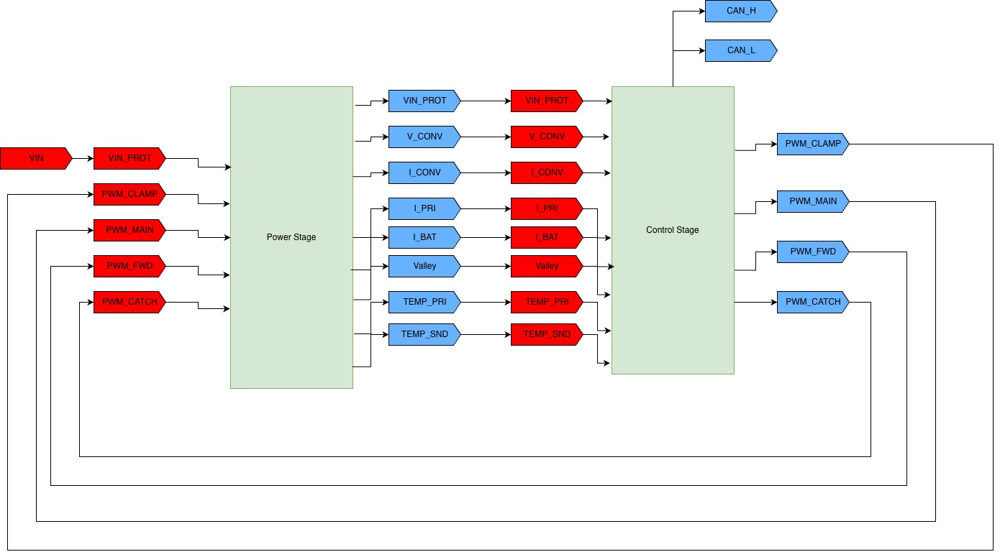
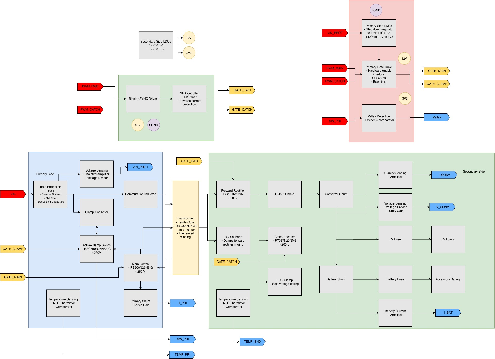
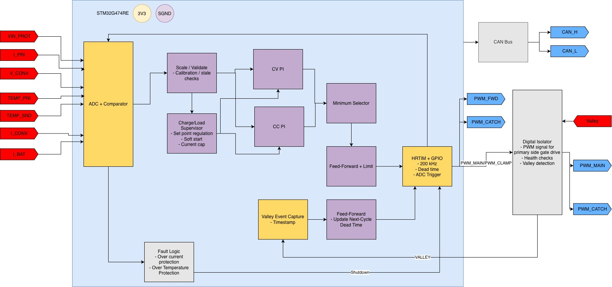
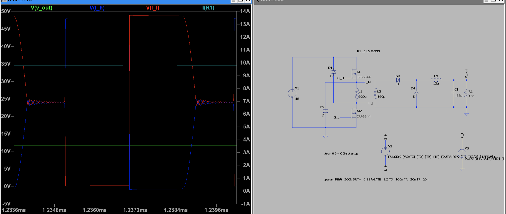

In progress · Jun 2026 – present
48 V to 12 V, 120 W isolated forward converter.
Power stage, magnetics, sensing, and digital-control design for a hydrogen fuel-cell vehicle.
Where it is now. This is my current project. The design is still in simulation, so every result on this page comes from LTspice, not hardware. The active-clamp design keeps output ripple under 0.8% at eight load points from 0.25 to 10 A. I’m now testing a two-switch forward version to meet the Shell Eco-marathon 60 V maximum-voltage rule.

An isolated low-voltage rail from a 48 V powertrain.
The vehicle needs a galvanically isolated 12 V supply from its nominal 48 V powertrain bus. The same converter is also meant to charge the low-voltage battery. The target is 12 V at 10 A (120 W) with 200 kHz switching.
It’s more than a topology choice: magnetics, switching behavior, synchronous rectification, mixed-signal sensing, protection, and digital control all have to work together. The design also has to meet the Shell Eco-marathon 60 V maximum-voltage requirement.
What I’m doing.
- Designed and simulated the 120 W, 200 kHz active-clamp power stage in LTspice using Infineon OptiMOS6 150 V vendor models.
- Modeled the custom PQ32/30 N97 transformer (6:4 turns, 180 µH nominal magnetizing inductance), with winding leakage as a parameter, and retuned 45–420 ns dead times to characterize switching behavior and device stress.
- Designed sensing front ends for protection on an STM32G474: Kelvin-sensed shunts, unity-gain-buffered voltage dividers, and NTC temperature sensing, feeding the on-chip ADC and comparator-driven fault shutdown.
- Testing a two-switch forward version in simulation. It clamps the primary switch nodes to the 48 V input rail to meet the 60 V rule.
Earlier design review.
These block diagrams show an earlier version of the design. I’m now designing a new version with different components, so part choices and values here don’t match the current design.



Why the design looks the way it does.
Test a two-switch forward to meet the 60 V rule.
In the active-clamp simulations, the main-switch node rises above 80 V while the clamp resets the transformer, which exceeds the Shell Eco-marathon’s 60 V limit. A two-switch forward clamps both primary switch nodes to the 48 V input rail, so I’m testing it as the rule-compliant option.
Make synchronous rectification depend on the operating mode.
Driving the catch MOSFET on while the output choke was in discontinuous conduction made its drain-voltage stress worse. Disabling that gate drive in DCM lowered the simulated peak at 1.5 A from 74.4 V to 52.8 V. I checked the whole conduction interval, not a single switching instant.
Keep fault shutdown separate from regulation.
Normal regulation runs digitally, from the ADC to PWM on the STM32G474. Fault shutdown runs through the on-chip comparators instead of waiting for the control loop, so protection doesn’t depend on firmware responding in time.
Design around the real magnetics and their tolerance.
The transformer model follows the specified core: 6:4 turns and 180 µH nominal magnetizing inductance, with a 144–234 µH catalog tolerance. Leakage is a parameter, not a fixed number, so the dead times can be retuned as the winding design firms up.
Magnetics for the active-clamp design.
- Core
- TDK PQ32/30, N97 ferrite, ungapped
- Turns
- 6 : 4
- AL
- 5000 nH/turn² (+30 / −20%)
- Magnetizing L
- 180 µH nominal · 144–234 µH catalog range
- Leakage
- 0.65 µH primary-referred, a provisional sensitivity point until the first transformer is measured
- Dead time
- 45–420 ns, retuned per operating mode
Steady state at full load.

Two-switch forward: staying under 60 V.
In a two-switch forward, the transformer primary sits between a high-side and a low-side switch. Clamp diodes return the magnetizing energy to the input, so neither switch node can rise much above the 48 V input rail.
That removes the active-clamp reset overvoltage and keeps the primary within the Shell Eco-marathon 60 V limit. The trade-off is that duty cycle must stay below 50% so the core can reset. I’m still testing this version in simulation before choosing it over the active clamp.

Where the project stands.
Working in simulation
- Active clamp: output ripple under 0.8% from 0.25 to 10 A
- Mode-dependent SR lowers catch-device stress
- Sensing and protection front ends designed
In progress
- Two-switch forward tests for the 60 V rule
- New design iteration with updated components
- Battery charge voltage and interface
Next
- Topology decision · PCB parasitics
- Transformer build and leakage measurement
- Protection bring-up, low-voltage startup, then controlled power tests